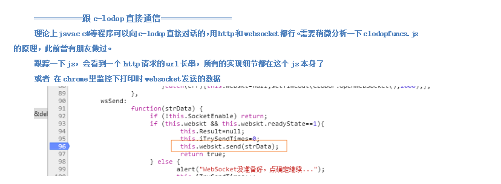

CS架构调用LODOP
CS架构如何使用delphi:
myLodop:=TLodopX.Create(Self);
myLodop.Parent:=myPanel;
myLodop.Height:=myPanel.Height;
myLodop.Width:=myPanel.Width;
myLodop.PRINT_INIT('');
myLODOP.ADD_PRINT_TEXT(10,10,100,20,'新加文本1');
myLODOP.ADD_PRINT_RECT(66,116,100,60,0,1);
myLodop.SET_SHOW_MODE('DESIGN_IN_BROWSE','1');
myLodop.print_design;
=================================
VB:
Private Sub Command1_Click()
With LodopX1
.PRINT_INIT ""
.ADD_PRINT_TEXT 10, 10, 20, 20, "aaaa"
.PREVIEW
End With
End Sub
=================================
C#:
首先添加引用文件：CAOSOFT_WEB_PRINT_lodop.ocx
Lodop.LodopXClass MyLodop = new Lodop.LodopXClass();
MyLodop.ADD_PRINT_TEXT(10,10,100,20,"新加文本1");
MyLodop.PREVIEW();
=================================
C++:
首先添加引用文件：CAOSOFT_WEB_PRINT_lodop.ocx
int a = 5;
_variant_t var;
var = (_variant_t)(int)a;
VARIANT v = var;
CString str = _T("xxx");
_variant_t varText = (LPCTSTR)str;
VARIANT dispText = varText;
lodop.ADD_PRINT_TEXT(v,v,v,v,dispText);
lodop.PREVIEW();
=======================
VC:
_variant_t bstrVar("abcdef");
C# ：引用CAOSOFT_WEB_PRINT_lodop.ocx
在C:\Program Files (x86)\MountTaiSoftware\Lodop
引用后会有ILodopX接口、ILodopXEvents接口，LodopX接口，LodopXClass类。
Lodop.LodopX PRLodop = new LodopX();
PRLodop.ADD_PRINT_TEXT(10, 10, 100, 20, "一个文本项");
PRLodop.SET_PRINT_STYLEA(0, "FontSize", 13.5);
PRLodop.SET_PRINT_STYLEA(0, "Bold", 1);
PRLodop.PREVIEW();
}
一些客户反馈的java调用方法，您参考摸索一下
/**
* Java调用lodop直接打印
* 需要引入jacob-1.17.jar包。
*
* @author TonyTan
* @version 1.0, 2017-3-9
*/
public class JavaLodop {
public static void main(String[] args) {
ActiveXComponent LODOP = new ActiveXComponent("Lodop.LodopX") ;
Dispatch lodop = LODOP.getObject();
Dispatch.call(lodop, "PRINT_INIT", "打印控件功能演示_Lodop功能_表单一");
Dispatch.call(lodop, "ADD_PRINT_TEXT", 50,231,260,39,"打印页面部分内容");
Dispatch.call(lodop, "PRINT");
System.out.println("...................lodop="+lodop);
}
}
报错未注册类
是否是安装后，引用的该路径下的在C:\Program Files (x86)\MountTaiSoftware\Lodop
注册表注册ocx文件试试。
安装lodop完成ocx注册 ，谁都可以调用，或直接调用我们的安装程序静默安装完成，或您自己的cs程序释放固定路径下，并在注册表注册ocx 文件，可以调用。
CS架构的用c-lodop
理论上java,c,c#等程序可以向c-lodop直接对话的，用http和websocket都行。
跟着一下JS，会看到http请求的url长串，所有细节都在这个JS本身了。
可以摸索一下，之前有人做过。

CS架构的有例子吗
没有CS架构的例子或文档，上面的是其他客户摸索后反馈的，只能自己摸索尝试下。